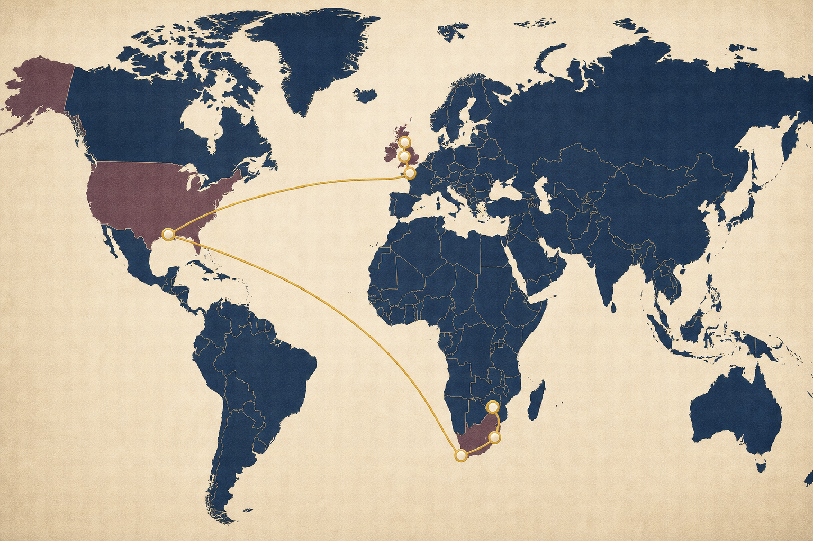

Travel & lodging
International airfare, regional transportation, lodging, and insurance.
 Josh Beyond Borders
Josh Beyond Borders
An invitation to partner
Prayer, encouragement, and financial support all help Joshua travel responsibly, serve meaningfully, and return with new creative vision.
Supporting airfare, regional travel, lodging, meals, local ministry costs, insurance, and contingency.
Secure giving partnership
Christian Steps Ministries will receive and process donations made in support of Josh Beyond Borders. PayPal securely handles each transaction, and eligible donors may also give using Venmo or a supported card.

Where support goes
Your gift helps cover the practical costs of a month-long journey anchored in England and South Africa.
International airfare, regional transportation, lodging, and insurance.
Meals and other essential expenses throughout the journey.
Costs connected with serving, worship opportunities, and trusted community partners.